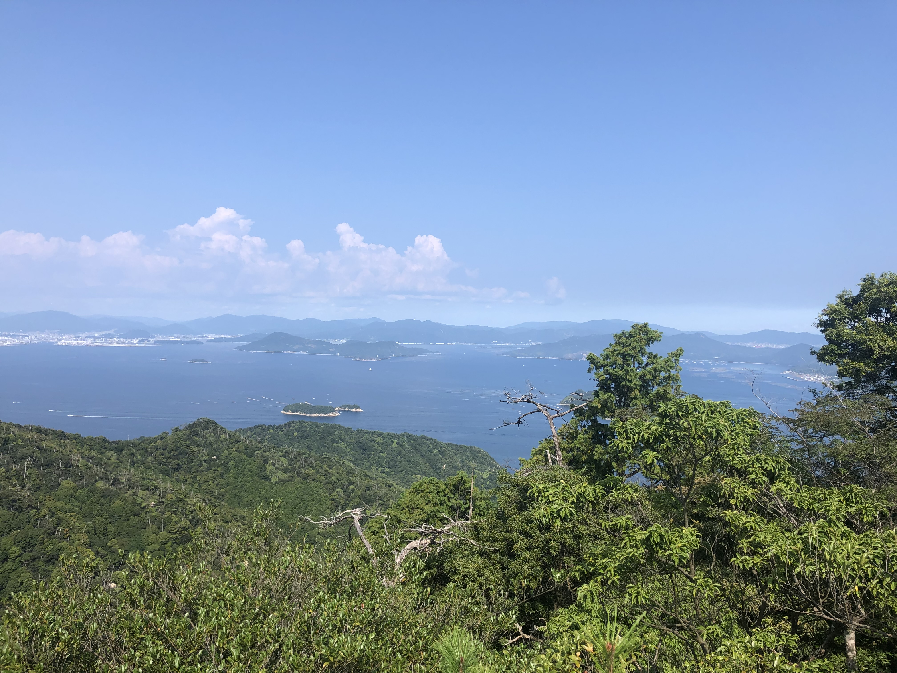
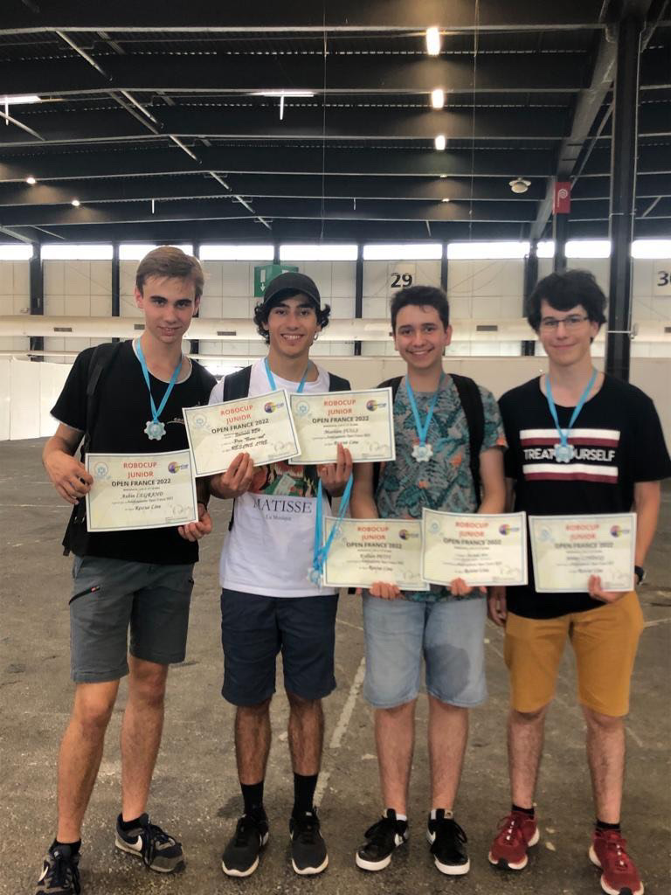

Participer à la RoboCup en 2022 avec mes amis a été une expérience inoubliable et enrichissante. Ensemble, nous avons relevé le défi de concevoir et de construire un robot entièrement à partir de zéro, en utilisant des outils innovants tels qu'une imprimante 3D et une carte Arduino. Chaque étape de ce processus, depuis la conception initiale jusqu'à la programmation finale, a été une leçon d'apprentissage et de collaboration. Nous avons dû faire preuve de créativité pour résoudre des problèmes techniques et relever des défis de conception, mais c'est cette expérience de résolution de problèmes qui a renforcé notre compréhension de la robotique et de l'ingénierie. La compétition elle-même a été à la fois stimulante et exaltante, nous permettant de mettre à l'épreuve notre robot contre d'autres équipes et de voir nos efforts se concrétiser sur le terrain. Participer à la RoboCup a été bien plus qu'une simple compétition ; c'était une aventure collaborative qui a renforcé notre amitié et notre passion pour la technologie.
Mon projet personnel de voyage au Japon était une expérience incroyable qui a profondément enrichi ma vie. À travers ce voyage, j'ai eu la chance d'explorer les merveilles de ce pays fascinant, des temples ancestraux aux ruelles animées de Tokyo. Chaque jour était une nouvelle aventure, remplie de découvertes culturelles et de rencontres inoubliables avec des gens chaleureux et accueillants. En revisitant ces souvenirs, je suis reconnaissant d'avoir eu l'opportunité de plonger dans une culture aussi riche et diversifiée. Ce voyage au Japon restera à jamais gravé dans ma mémoire comme une expérience qui a élargi mes horizons et enrichi ma perspective sur le monde.